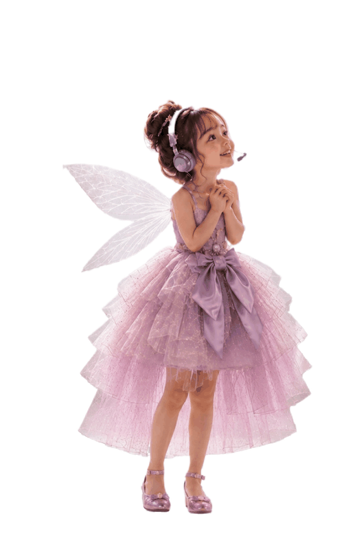
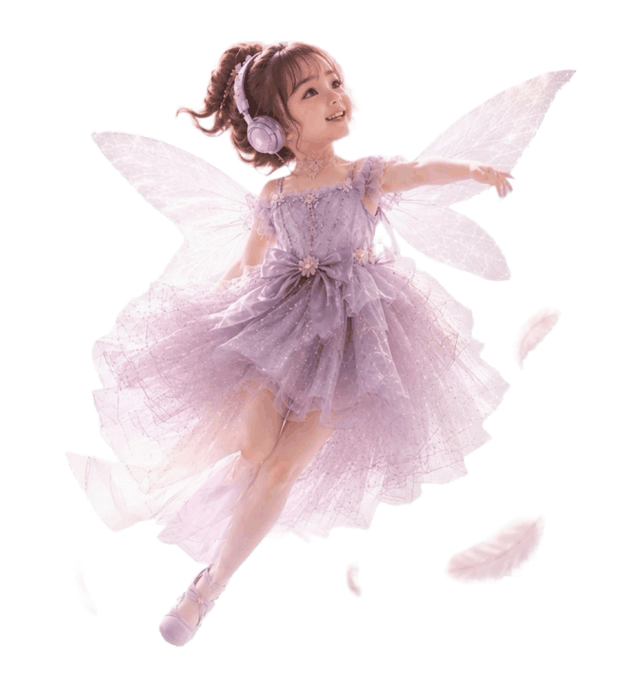
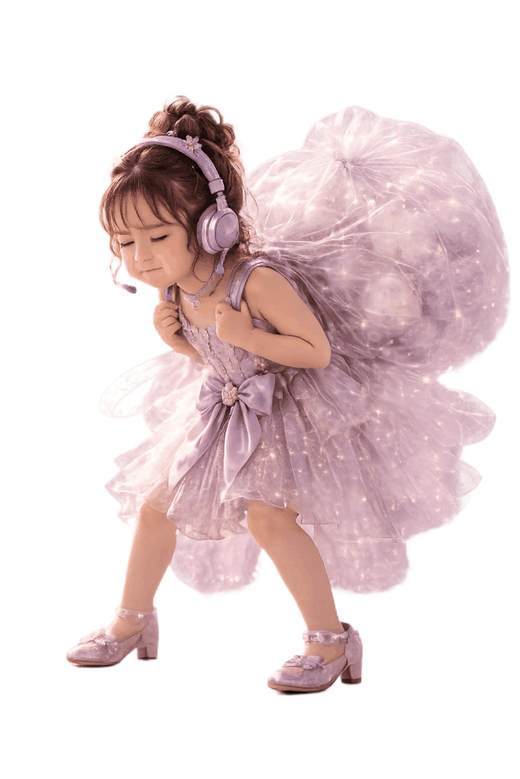
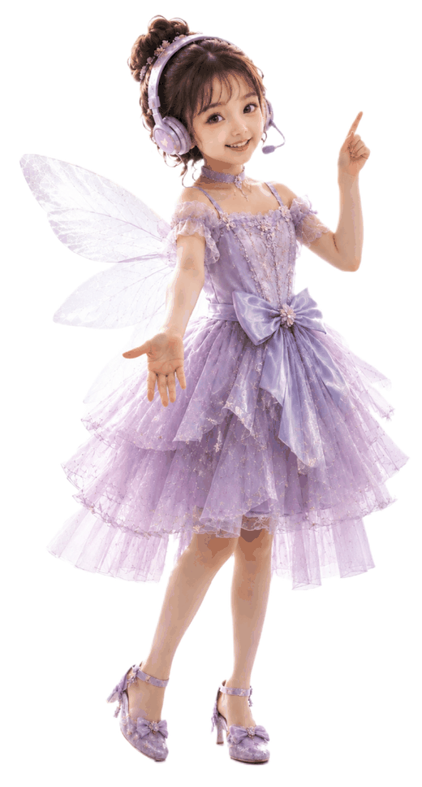

AIぼたん
今日の案内役・ぼたんの分身
SELF CHECK
無自覚の
「力み（ﾌﾝｯ）」度
セルフチェック
高い美容液を塗っても、
美容医療を試しても、
なぜか「疲れた顔」が変わらない。
夜寝ても疲れが取れなくて、
朝からどんよりしてしまう。
「私の頑張りが足りへんのかな」って
自分を責めてるかもしれんけど……
それ、ほんとなん？
あなたの肌や性格が
悪いわけじゃないんよ。
気づかんうちに、脳も身体も
ずっと「ﾌﾝｯ」って
踏ん張ってるだけかもしれん。
考え込まずに、
普段の自分に近いものを選んでね。
19 の問い




RESULT
力んでいたことに気づいたら、
次はその奥にある「ちゃんとしなきゃ」を
見てみる？
ぼたん ／ 美容ナース15年
今日気づけたことって、めっちゃ最高やね。
根っこまで一緒に巡らせたい人は、
ぼたんに話しかけてね💜
結果はこの端末に保存されます。
また疲れたとき、見に来てね。